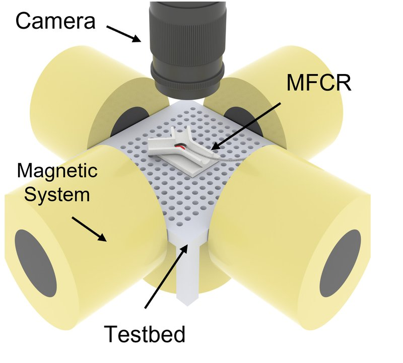

Magnetic navigation · tsinghua_wang2023
MFCR
MFCR: magnetic-controlled flexible continuum robot with C, J and S deformation modes, steered by a three-dimensional electromagnet platform

1 / 3


- Family
- Magnetic navigation (magnetic-navigation)
- Devices
- its own magnetic soft continuum robot (guidewire-like): silicone elastomer with NdFeB powder (1:1 by mass) as the magnetic tip, nitinol-core silicone body (Sec. 2.2); advanced into the branch 'with the help of manual operation' (Sec. 3.2)
- Degrees of freedom
- tip deformation set by the field direction and strength (three planar modes C, J, S); insertion by hand (Sec. 3)
- Push
- Magnetic
- Twist
- Field direction
- Tested up to
- Phantom
- Sim-to-real
- None found — No simulation-trained controller found for this robot.
Testing
- Highest level
- Phantom
- What was tested
- bench: static deformation in the three-dimensional electromagnet platform against the model, n = 3 per condition (Sec. 3.1, Fig. 4); phantom: passing 30-130 deg ring channels and aorta-coronary models with a permanent magnet (Fig. 5), and entering a branch past an obstacle with J and S modes in the electromagnet system (Fig. 6, Videos S1-S2)
- Key numbers
- C-shape field 19.7-127 mT; < 150 mT in all tests (Sec. 4); max mean angle error 2.979 deg and max mean tip-position error 0.328 mm (Sec. 5); J mode 0.589 / 0.499 deg and 0.103 mm (Sec. 4); magnetised at 1.5 T for 10 s (Sec. 2.2)
Mechanism
- Push (translation)
- magnetic (steering); forward push by hand ('with the help of manual operation', Sec. 3.2)
- Twist (rotation)
- magnetic torque of the external field on the programmed magnetisation; no axial rotation (Sec. 2.1, 3.1)
- Device range
- magnetic part L = 15 mm (segments 6, 3 and 6 mm with different magnetisation), D = 1.5 mm (Sec. 3.1, Fig. 3)
- Target anatomy
- coronary access through aorta-coronary bifurcations (PTCA-type guidewire navigation, Sec. 3.2); tested in 3D-printed ring channels (ID 4 mm, 30-130 deg), simplified aorta-left/right coronary models at three angles, and a Y-bifurcation with clay obstacles (Sec. 3.2-3.3, Figs. 5-6)
Sensing and interface
- Force sensing
- none
- Leader and haptics
- none (N.R.)
- Imaging
- optical: DSLR camera, camera above the testbed (Fig. 1c, Sec. 3.1); fluoroscopy N.R.
- Sterility
- N.R.
Size
- Footprint (mm)
- N.R.
- Mass (kg)
- N.R.
Simulation
- Simulation model
- yes: quasi-static model from magnetic plus elastic potential energy on an Euler-Bernoulli beam, solved in MATLAB to predict the deformation modes (wang2023_magnetic Sec. 2.1, 3.1)
- Sim-trained controller
- none found
Versions
- Lineage
- single version (wang2023_magnetic, Actuators 12:247, 2023)
Sources
- A Magnetic-Controlled Flexible Continuum Robot with Different Deformation Modes for Vascular Interventional Navigation Surgery · Actuators, 2023 · doi:10.3390/act12060247 [wang2023_magnetic]
- The Design of Endovascular Robots for Cardiac Interventions: A Survey · Journal of Field Robotics, 2024 · doi:10.1002/rob.22480 [alekseeva2025_design]
Notes
- Notes
- N3 2026-11-08, from review_comparison Sec. 1.3 (Alekseeva Table 15 row 2). In scope as magnetic navigation: a computer-controlled 'three-dimensional electromagnet platform' bends the tip inside vessel models with a measured result. Number of coils, currents and workspace of the platform N.R. The permanent magnet of Fig. 5 was 'held in the operator's hands or installed on a robot arm' (Sec. 4); which one N.R.
This record
- Read level
- full
- Picture
- wang2023_magnetic Fig. 1(c), p. 3 ↗ — licence: CC BY 4.0; grade C
- Picture changes
- native embedded raster (two strips of 3418 px joined); cropped to panel (c), panel letter cropped off; labels 'Camera', 'MFCR', 'Magnetic System', 'Testbed' and their arrows kept (one arrow touches the MFCR); not upscaled
- Found by
- actuated-tip: Search of actuated-tip and magnetic devices.
- Data
- JSON · YAML:
records/robots/tsinghua_wang2023.yaml - Correction
- Suggest a correction [repository not created yet]